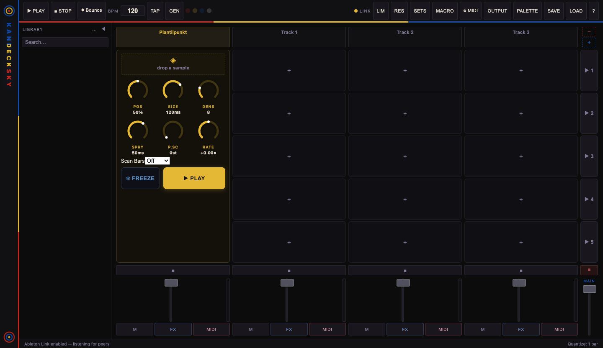

A live-performance clip launcher and granular instrument, with a Rust-native audio engine.
For macOS, Linux, and Windows. Works with any MIDI grid controller, or just the mouse and keyboard. Built by the same person who makes the music.

Click a cell and it fires on the beat: instant, ½ bar, or up to 4 bars. Scene launch fires a whole row. You can hot-swap a file onto a playing cell, chain clips with follow actions, and there are stutter and slip gestures on the pads.
Drop a sample on the dedicated granular track and it plays back as a cloud of tiny grains. Freeze the spectrum, scan through the file in time with the tempo, scatter the pitch. It never clicks, and every knob takes MIDI Learn.
Audio never touches the browser layer. Playback, time-stretching (WSOLA, pitch-preserving), per-track EQ, compression, delay, reverb, and a brickwall limiter all run in a native engine with its own low-latency device stream.
Euclidean rhythms, Markov chains, a step sequencer, call & response, pattern mutation, cellular automata. Switch it on and the grid keeps itself busy while you mix.
Ships with profiles for the Akai APC20 and generic pad grids. Beyond that, MIDI Learn covers every control in the app (35 targets), so odd hardware is fine too. If your pads have LEDs, they follow clip state.
Ableton Link for peer-to-peer tempo sync, MIDI Clock in and out, and OSC tempo/transport with your DAW. Per-track multichannel direct outs let you record stems rather than a stereo bounce.
I built Kandecksky because I didn't want to hassle with a full DAW just to play loops live. It started as the smallest thing that could launch clips on the beat, and then it kept growing until it was an instrument in its own right. Now it feeds the DAW too: I perform in Kandecksky and record the stems back into a session.
— J.
One purchase covers all three platforms.
macOS: builds aren't notarized yet — see the install steps in the user guide if Gatekeeper blocks the first launch. MIDI note-out on Windows additionally needs loopMIDI for virtual ports.